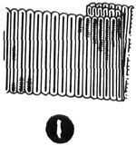
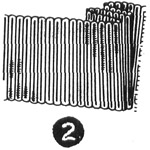
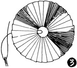
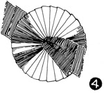
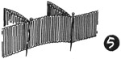
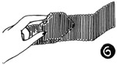
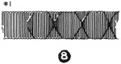
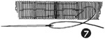
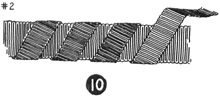
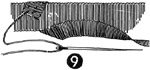

1952—How to Make Hats
by Ruby Carnahan
Ribbon Ornaments
PLEATED RIBBON ORNAMENT
MATERIAL REQUIRED
- 1 1/2 to 2 yards of 1 1/2" grosgrain ribbon, depending on size of ornament. Any width ribbon may be used.
PLEATING RIBBON
(Illus. 1) Make a 1/4" pleat in ribbon and sew in lower corner.
(Illus. 2) Make another pleat in ribbon and fold pleat almost even with first pleat and sew in lower corner, sewing through all thicknesses of ribbon. Repeat until you have enough ribbon pleated to make the size circle you want.
(Illus. 3) Join ends of pleated ribbon to form a circle.
(Illus. 4) Cut two pieces of ribbon on the bias and slip through center of ribbon circle. Sew to back of ornament.
RIBBON BANDS FOR CASUAL HAT BRIMS
RIBBON BAND NO. 1
Use 1 1/2" yards of 1 1/2" grosgrain ribbon for band. Fold ribbon over 1" and tack on underside of fold (Illus. 5).
Turn each side of fold under on right side of band, making a point in center of each fold (Illus. 6).
Sew point down (Illus. 7) with a large bead. Continue making ribbon folds 2" apart around entire band (Illus. 8) turning each side of fold under and sewing with a bead as described. Tack ribbon band around crown of any casual hat.
RIBBON BAND NO. 2
Use two widths of ribbon for this band, and two colors 3/4" of a yard of 1 1/2" grosgrain ribbon and 1 1/2 yards of 3/4" grosgrain ribbon in a contrasting color. (Illus. 9) Fold narrow ribbon on a bias slant over wider ribbon and tack each fold to wide ribbon band at top and bottom (Illus. 10).